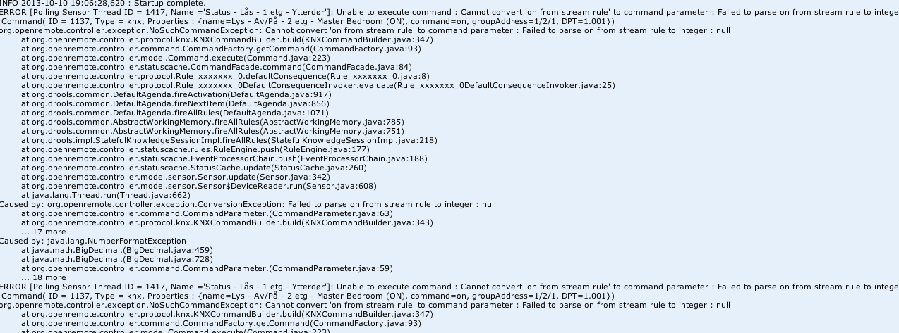
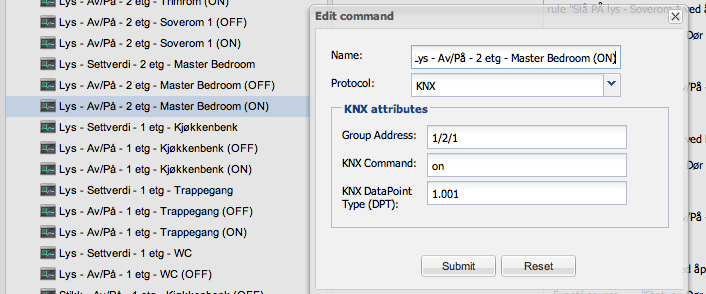

Hi,
I am newbie at both openremote and the language used for coding rules.
Except for my lack of experience and know how in terms of java language, Openremote and the possibilities
are amazing!!
Hopefulle someone in here are kind enough to give me some tips and help
on how to do "master" this 
I have created a few rules all ready but there is one rule (so far) that I am struggeling with:
I want to create a rule that turns the light on in a room, when the door opens, but only if the door is
opended between 13 and 13:45.
I have tried with this rule, but this rule does not turn the light on when the door opens, however it controls the
status every minute or so, and if the door is open the light turns on. If I open and close the door before the status control the light
never turns on.
rule "Turn on light when door opens"
timer (cron: 0 00-05 13 ? * 2-6)
when
Event( source == "Status - Dør - 1 etg - Gang", value == "off" )
then
execute.command("Lys - Av/På - 1 etg - WC (ON)");
end
What do I need to alter?
Help is appreciated.
{kind=link}
{kind=link}
|
If you change the timer to: timer (cron: * 00-05 13 ? * 2-6) Using the asterisk on the seconds would mean the condition gets checked every second, rather than once a minute. Would that have an impact (assuming you don't open and close the door faster than in one second)? |
|
Hi Juha, That did the trick for some of the operations/functions that I wanted, however solving the problem this way creates an The idea was to use the status of the door to turn lights on/off for a bedroom. But I do not want the light to turn on 1. If the door stays open during daytime there is now way to turn the light off since the rule uses the status off the door. 2. Switching the time setting for the rule does not work either from (cron: * 00-59 7-23 ? * 2-6) to (cron: * 00-59 00-7 ? * 2-6), because during night time the Alarm is turned on, and one of the functions of the Alarm is to turn the bedroom lights on 100% if any sensor in the house changes status. With this rule running and the lights dont turn on due the constant check against the status of the bedroom door. Is there a way to write a rule, that only is active between a certain time of the day, or a rule that only reacts to change on status between certain times? PS I also think I am doing the time settings wrong (cron: * 00-59 7-23 ? * 2-6) to (cron: * 00-59 00-7 ? * 2-6), what I am trying to write is between 7 in the morning to 24 or from 24 to 7 in the morning. |
|
On case 1, I think it could be possibly solved by having your timer based on two separate conditions. Pseudo code: declare WallSwitchOverride
isEnabled : boolean
end
rule "foo"
timer (daytime)
when
Event (source = "door status", value == "on)
WallSwitchOverride ( isEnabled == false)
then
execute.command("turn light on")
end
rule "for light switch"
when
Event (source = "light switch", value == "off")
then
insert(new WallSwitchOverride(true))
execute.command("light off")
end
Sorry do not have a good practical example to show how to implement this exactly correctly, and no time to write one at the moment. Basically it is trying to say:
This isn't a complete example for your use case, some of the interactions are not clear to me, so you will need to write more rules to manage all the possibilities you describe. But it does attempt to show that you can insert your own facts into the rules (the 'declare' keyword) and have your timers and conditions based on those custom facts in addition to the event values. There are some examples of using declared facts as part of your rules in this thread (search for the declare keyword): One more question about rules.. And there's a example that shows the full syntax of declaring your own facts here: Advanced Rule Examples but not much documentation around this yet. It will probably require you to get into Drool programming a bit and reading the Drool language documentation to get to the final outcome. And you will need to write several rules to manage the 'WallSwitchOverride' state in all the different scenarios you describe. |
|
Another way to do this could be to use the in-memory virtual commands (which are good enough for simple boolean states). Then instead have the "daytime" condition based on two events, the door open status and what your additional "switch" for the light says (this doesn't have a physical device representation). And then include the controls to change the in-memory switch only from the wall switch, not affected by the door open/close status. Basically replacing the 'declare' variable with an additional "virtual" device in the designer. Unfortunately no documentation on this either, but there's a forum discussion here: In-Memory Virtual Command Help. Hopefully these help you move forward. |
|
Hi, Thank you for help so far!! This could also fix my issue, i think, not the best sulotion, but it works and it also rule "Master Bedroom light on" when Event( source == "Door", value == "on" ) then execute.command("Dim Light", 30); end rule "Turn light of after 45 min" timer (int: 45min) when eval(true) Event( source == "Door", value == "on" ) then execute.command("Lys - Av/På - 2 etg - Master Bedroom (OFF)"); end rule "Blocking light in Master Bedroom" timer (cron: * 00-59 0-6 ? * 2-6) when Event( source == "Status - Dør - 2 etg - MasterBedroom", value == "on" ) then execute.command("Lys - Av/På - 2 etg - Master Bedroom (OFF)"); end But I will definately look into In Memory Virtual Commands and read more about Drool programming. alot more flexible and it will allow me to integrate my mediacenter (denon, samsung etc) in one app One small question, when writing rules in the OR Designer, when having multiple rules it tends to become quite difficult to keep track of each rule. Is there a way to separete them with a line or something so it becomes easier to see where one code ends, and another begins? |
|
Nothing wrong with using a timer. It is simple, simple is elegant, and if it works, it works. I wouldn't write the rules in the designer's editor – use your favorite editor and then copy/paste the final result in the designer when done. |
|
I am trying to make a rule based on multiple events,but i do not know how to write this: rule " xxxxxxx" when Event( source == "ccccccccccccc", value == "off" ) then execute.command("cccccccccc (OFF)"); end I assume this is possible, but how do I write this kinde of rule? |
|
The keyword 'or' is valid on the left-hand side (in the 'when' condition), so the example should work as-is. Conditional "and" is implicit, so: rule " xxxxxxx" when Event( source == "A", value == "off" ) Event( source == "B", value == "off" ) Event( source == "C", value == "off" ) Event( source == "D", value == "off" ) then execute.command("cccccccccc (OFF)"); end Would read: when event from source A and event from source B and event from source C and event from source D all have a current state value of 'off' then execute command OFF. |
|
Thanks, that did work, I just got the code wrong the first time I tried. If I wanted to use the following rule: rule " xxxxxxx" when Event( source == "ccccccccccccc", value == "off" ) then execute.command("cccccccccc (OFF)"); end But this was depending on that "status" of the house (thinking In Virtuel Memory), lets call it night mode switch on/off. If I wanted to say that if nigthmode is On and one of the eventes in the rule happens, then execute the command. rule " xxxxxxx" if ( source == "Nightmode", value == "on" ) and (one of the events below should happen) Event( source == "ccccccccccccc", value == "off" ) then execute.command("cccccccccc (OFF)"); end |
|
You can group conditions using parenthesis: rule " xxxxxxx" when ( Event ( source == "Nightmode", value == "on" ) AND ( Event( source == "A", value == "off" ) OR Event( source == "B", value == "off" ) OR Event( source == "C", value == "off" ) OR Event( source == "D", value == "off" ) ) ) then execute.command("cccccccccc (OFF)"); end |
|
Thanks for the answer, and not at least for the quick respons time!!! If I could ask another small question, if I want to execute a command not based on status being ON or OFF, Is there an easy way to write that? |
|
You just leave the value out of the condition evaluation: rule " xxxxxxx" when Event ( source == "Nightmode" ) then execute.command("cccccccccc (OFF)"); end Any time there's a change of value from the event source, the command is executed. |
|
Thanks |
|
The following rule works fine, but it creates an unwanted side effect. The issue is as follows: rule " xxxxxxx" when ( Event ( source == "Nightmode", value == "on" ) AND ( Event( source == "A", ) OR then execute.command("Light (ON)"); end |
|
You would need to switch it from the cloud mode into stream mode (it is only 2 lines in source code change, I don't know if it can be done through config properties). When you do this then the code that will do what you want is: declare myEventABCD @role(event) @expires(1m) on : boolean end declare myEventNight @role(event) @expires(20h) on : boolean end rule "myRuleABCD" when Event(source=="A")or Event(source=="B")or Event(source=="C")or Event(source=="D") then insert(new myEventABCD()); end rule "myRuleNightOn" when Event ( source == "Nightmode", value == "on" ) then insert(new myEventNight()); end rule "myRuleNightOff" when Event ( source == "Nightmode", value == "off" ) $e:myEventNight() then retract($e); end rule "xxxxxxx" when $e:myEventNight() myEventABCD(this after $e) then execute.command("Light (ON)"); end |
|
Well, although it should be done in the stream mode, your particular example can be coded in the cloud too. It is a bit ugly but it is working: declare myEventABCD on : boolean end rule "myRuleABCD" when Event(source=="A")or Event(source=="B")or Event(source=="C")or Event(source=="D") then insert(new myEventABCD()); end rule " xxxxxxx" when Event ( source == "Nightmode", value == "on" ) $e:myEventABCD() then execute.command("Light (ON)"); retract($e); end rule " yxxxxxx" when Event ( source == "Nightmode", value != "on" ) $e:myEventABCD() then // simply remove event so it wont be active when the night comes retract($e); end |
|
Hi Michal, I am new to this whole programming language and I don't quite understand the rule above. declare myEventABCD // is this a new event/command I need to create in Virtual Memory? rule "myRuleABCD" rule " xxxxxxx" when rule " yxxxxxx" when Also you write something about stream mode vs cloud mode. |
|
Hi Stian, Please just copy the code as is in your rule file declare myEventABCD @role(event) on : boolean end declare myEventNight @role(event) on : boolean end rule "myRuleABCD" when Event(source=="A")or Event(source=="B")or Event(source=="C")or Event(source=="D") then insert(new myEventABCD()); end rule "myRuleNightOn" when Event ( source == "Nightmode", value == "on" ) then insert(new myEventNight()); end rule "myRuleNightOff" when Event ( source == "Nightmode", value == "off" ) $e:myEventNight() then retract($e); end rule " xxxxxxx" when $e:myEventNight() myEventABCD(this after $e) then execute.command("Light (ON)","on from stream rule"); end Here there are 4 sensors: A, B, C, D, Nightmode. The rest is internal to drools to process the logic. Leave the empty braces as they are. In the cloud mode there is no concept of /now/, so events cannot expire by themselves. You must always retract inserted facts otherwise after a while the memory will be full and controller either slow downs or crashes. |
|
Hi Michal, Thanks for your reply. However, the code does not make the light turn on when a change in status for one of the sensors are detected. So it fixed my initial problem, but now the nightmode does not work. I have copied the code that I have inserted, maybe you can see why it does not work. The "nightmode" is a command/sensor created In Memory Virtual Command. Thanks for helping me out so far. declare myEventABCD @role(event) on : boolean end declare myEventNight @role(event) on : boolean end rule "myRuleABCD" when Event( source == "Status - Lås - 1 etg - Ytterdør" ) then insert(new myEventABCD()); end rule "myRuleNightOn" when Event( source == "Nightmode", value == "on" ) then insert(new myEventNight()); end rule "myRuleNightOff" when Event( source == "Nightmode", value == "off" ) then retract($e); end rule " xxxxxxx" when $e:myEventNight() then execute.command("Lys - Av/På - 2 etg - Master Bedroom (ON)","on from stream rule" ); end After some checking I found I get the following error:  |
|
Hi Stian, the problem is in the command execute.command("Lys - Av/På - 2 etg - Master Bedroom (ON)","on from stream rule" ); The log file shows that the parameter should be integer, so perhaps it should be changed to something like this
execute.command("Lys - Av/På - 2 etg - Master Bedroom (ON)", 1 );
or maybe simple
execute.command("Lys - Av/På - 2 etg - Master Bedroom (ON)");
Log file shows that the parameter to your command should be an integer. |
|
 execute.command("Lys - Av/På - 2 etg - Master Bedroom (ON)" Playing around a bit I have used the follow command: execute.command("Lys - Settverdi - 2 etg - Master Bedroom", 95 ); If there is no need for this text "on from stream rule", then the rule now seems to work Thanks you for your help! |